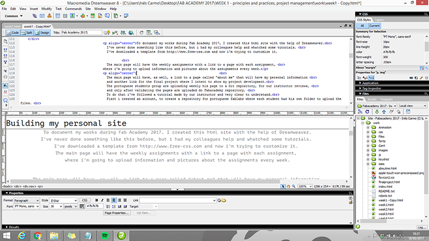
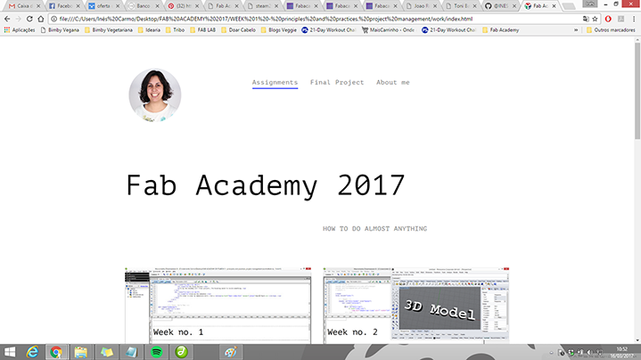
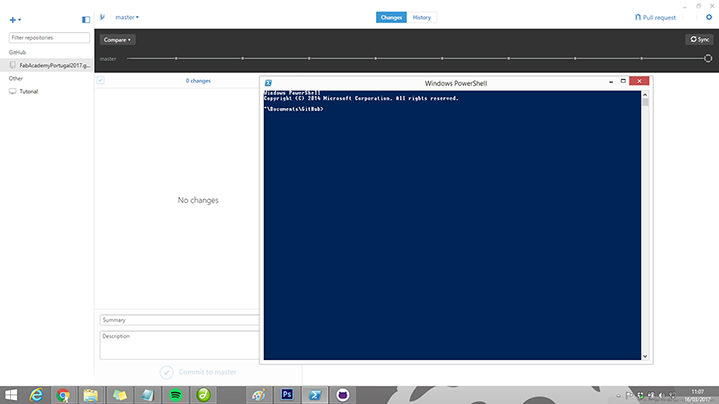

Week no. 1
Building my personal site
To document my works during Fab Academy 2017, I created this html site with the help of Dreamweaver.
I've never done something like this before, but i had my colleagues help and whatched some tutorials.
I've downloaded a template from http://www.free-css.com and now i'm trying to customize it.
Dreamweaver is very intuitive because you can choose the splited view, here you can see the design and the code
at the same time and you start to understand the code very naturaly.

The main page will have the weekly assignments with a link to a page with each assignment,
where i'm going to upload information and pictures about the assignments every week.
The main page will have, as well, a link to a page called "about me" that will have my personal information
and another link for the final project where I intent to show my project development.

The portuguese students group are uploading weekly his page to a Git repository, for our instructor reviews,
and only after validating the pages are uploaded do Fabacademy repository.
To do that i've followed a tutorial made by our instructor and very clear to understand.
Fisrt i created an account, to create a repository for portuguese fablabs where each student has his own folder to upload the files.
When i complete each week imput or change anything i use the git shell in windows OS,
and the git mantra:
cd ~/Desktop/FabAcademy/FabAcademyPortugal...
git pull
git add .
git status
git commit -m "just a smal comment"
git push;

Planing the semester
In order to plan my semesters work i did a Gantt Chart it's not completed yet, but i'm working on it.
My Final Project
To my Fab Academy 2017 final project, I’m thinking about something related to bike ridding that could be useful for me.
Some years ago i rebember to see this stop light for the bike that was activated as you brake and i
thought this was a nice opportunity to try to do it myself because with this project i think that a could integrate
a good part of the fab academy modules.